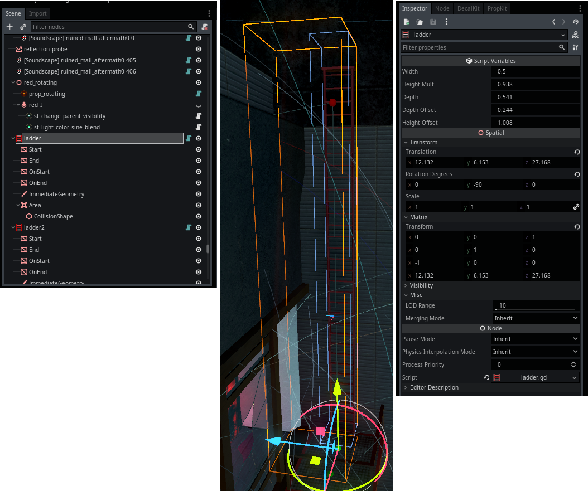
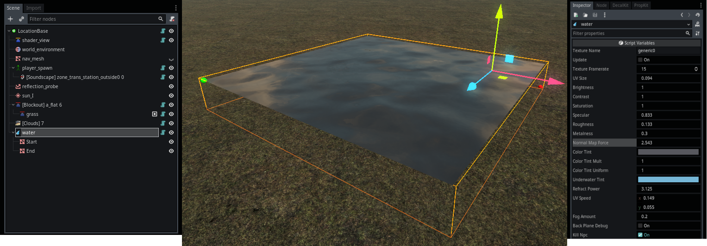
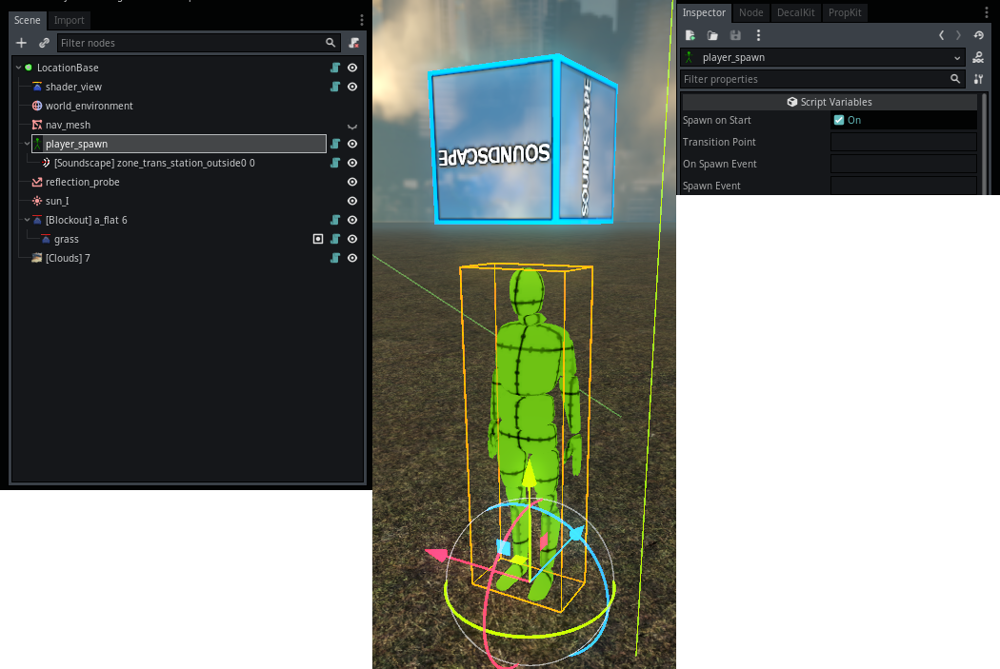

Module: player_controller
Documentation last edited: October 23, 2025 at 14:33 UTC
Description
Сам игрок. Или сама. В любом случае, это штука игрока. Это довольно комплексный модуль, но в основном он состоит из кода, поэтому мы разберём его файл за файлом.
Структура скриптов
.
├── globals
│ ├── global_data.gd
│ ├── pc_water_list.gd
│ └── player_stats.gd
├── mouse_look.gd
├── nodes
│ ├── ladder.gd
│ ├── player_spawn.gd
│ ├── player_teleport_pos.gd
│ └── water.gd
├── player_camera_motion.gd
├── player_main.gd
├── states
│ ├── state_debug_fly.gd
│ ├── state_ladder.gd
│ ├── state_walk.gd
│ └── state_water.gd
├── stats_adder.gd
└── weapon_handler.gd
Главный скрипт игрока
"./player_main.gd"
Итак, это класс. Большой. Не самый большой в игре, но эй (я всё равно не проверял). Это не типичный
"player.gd"
, который был бы самой большой штукой в игре. Ладно, это не меняет того факта, что он огромен. Он огромен, потому что есть много систем, с которыми игрок должен взаимодействовать.
"player_main.gd"
- это своего рода хаб для всех систем. Он делает следующее:
- Берет
"res://modules/player_controller/assets/scene/player.tscn"
и инициализирует всё из него. Типа, сцена имеет *некоторые* узлы, но остальное происходит в коде.
- Управляет/контролирует разделённые состояния движения (ходьба, плавание, лестница, debug полёт).
- Использует
PlayerStateWalk
для физики ходьбы/бега.
- Использует
PlayerStateLadder
для движения по лестнице.
- Использует
PlayerStateWater
для логики плавания.
- Использует
PlayerStateDebugFly
для режима свободного полёта для отладки.
- Напрямую управляет переходом высоты игрока.
- Используется
PlayerStateWalk
для настройки высоты при приседании.
- Обрабатывает физику и позиционирование подобранных объектов.
- Обрабатывает проверку границ локации, сбрасывает позицию игрока, если за пределами (может мне нужно сделать локацию out_of_bounds вместо этого?)
- Контролирует иерархию и трансформы камеры.
- Управляет корректировками FOV из настроек.
- Обрабатывает настройки толчков/тряски камеры.
- Координирует multiple эффекты камеры, такие как подавление, тремор при низком HP, волна от взрыва.
- Инициализирует и обновляет все элементы HUD, управляет их видимостью.
- В основном просто вызывает класс
HeadsUpDisplay
для этого.
- Обрабатывает "провал миссии" (смерть).
- Обрабатывает некоторую логику, связанную с прицелами (как в функции
process_dealt_damage_info
).
- Обрабатывает логику регенерации здоровья.
- Инициализирует и обрабатывает систему оружия.
-
PlayerWeaponHandler
обрабатывает вводы для оружия.
-
PlayerWeaponSystem
предоставляет интерфейс для оружия.
- Инициализирует логику движения мыши.
- После этого
PlayerMouseLook
обрабатывает логику движения мыши для перемещения камеры.
- Инициализирует логику пост-обработки.
- Использует
PostProcessingSystem
для этого.
- Хранит отдельные классы эффектов (
FlashbangPostProcessing
,
UnderwaterPostProcessing
и т.д.)
- Хранит и обрабатывает данные
Character
.
- Обрабатывает шаги с помощью класса
Footstep
.
- Обрабатывает некоторую логику снаряжения/перков с помощью
LoadoutSystem
.
- Обрабатывает функции загрузки/сохранения системы сохранений для сохранения своих данных.
Смотри, я знаю, что ты скажешь.
Ты скажешь, что это могло быть более модульным. Да, могло бы. И я скажу тебе заткнуться нахрен и увидеть реальность такой, какая она есть - мне просто нужно было что-то, что бы работало и что не ебалось бы с моим разумом слишком сильно, имея слишком много вызовов между скриптами. Так что, ты и я, мы будем работать с этим монолитным еле-разделённым монстром, потому что такова жизнь.
Движение мыши игрока
"./mouse_look.gd"
Это простой класс, который обрабатывает логику движения мыши для перемещения камеры, здесь нет ничего special.
Движение камеры игрока для размытия в движении
"./player_camera_motion.gd"
Типо устарело
Этот класс использовался для размытия в движении, которое не является частью этой игры больше. В коде остались некоторые остатки, и это можно как бы восстановить, но зачем тебе это нужно? Это не было чем-то крутым. Это было багнуто и плохо.
Обработчик оружия игрока
"./player_weapon_handler.gd"
Класс, который обрабатывает взаимодействие с системой оружия. Имей в виду, класс
PlayerWeaponSystem
не является частью этого модуля.
PlayerWeaponHandler
только "общается" с системой оружия и обрабатывает некоторые вводы. Я бы сказал, что не необходимо его существование, но как уж есть.
Добавление статистики игрока " ./stats_adder.gd"
Устарело
Итак, был классненький экран в конце миссии со всеми видами статистики. Это больше не работающая часть этой игры, остались некоторые остатки, которые мне слишком лень удалять.
Автозагрузки
PlayerData
- по сути существует просто потому, что мне нужно было написать
PlayerData.get_player()
где-то, чтобы получить игрока, это всё.
PCWaterList
- просто простой список всех источников воды, он так же может использоваться для создания брызг.
PlayerStats
-
Устарело
связано с упомянутой ранее статистикой игрока, которая не является частью этой игры больше.
Узлы
PlayerControllerLadder

Узел лестницы. Игрок входит в область, поднимается/спускается и т.д. Принуждает игрока войти в
PlayerStateLadder
. Эта штука как бы понятна, если ты хочешь увидеть больше - загляни в исходный код. Работает путём установки начальной и конечной точек.
PlayerControllerWater

Узел воды. Игрок входит в область и начинает плавать. Принуждает игрока войти в
PlayerStateWater
. Работает путём установки начальной и конечной точек.
PlayerSpawn

Узел спавна игрока. Спавнит игрока во время инициализации локации. Стоит упомянуть, что игрок "спавнится" только один раз, и его экземпляр переиспользуется в разных локациях, чтобы ускорить экран загрузки. Могут быть установлены точки перехода для переходов между локациями. Это также может использоваться вместе с событиями локаций, чтобы либо реагировать на спавн, либо принудительно заспавнить игрока снова.
Состояния
PlayerStateWalk
- обычное состояние, когда игрок просто ходит вокруг.
PlayerStateLadder
- активируется во время подъёма по лестнице, просто превращает движение в движение вдоль определённой линии (которая определяется
PlayerControllerLadder
).
PlayerStateWater
- активируется во время плавания в области воды, определённой
PlayerWater
.
PlayerStateDebugFly
- активируется с использованием консольных команд, таких как
"debug_fly"
.
General Information
Root directories list
assets, docs, src
Nodes
PlayerControllerLadder
PlayerTeleportPos
PlayerControllerWater
PlayerSpawn
PCWaterList
PlayerStats
PlayerData
PlayerMain
Classes
PlayerCameraMotion
PlayerWeaponHandler
PlayerStatsAdder
PlayerMouseLook
PlayerStateDebugFly
PlayerStateWater
PlayerStateLadder
PlayerStateWalk
Resources
None
Other Scripts
None